On the Harry branch, not live yet.
Overnight round, 20 Oct 2026. In Admin → Patch notes this is v0.69.
This page is v0.69 in Admin → Patch notes.
The 19 Oct 3D audit said: skin turns yellow in cut scenes. 94% of the skin in the signing and press scenes was past the yellow line.
The film-style tone mapping runs out of red first. Then the warm colour grade added yellow on top.
No new light and no extra drawing. Skin keeps half of each light’s colour. Skin is tone-mapped by its brightness only, and 80% of the colour grade skips it. The Home scene also gets a soft rim light.
“Yellow” means skin whose colour is past 36 degrees. Real player skin tones sit at 23 to 31 degrees. Grey is before (19 Oct). Colour is after.
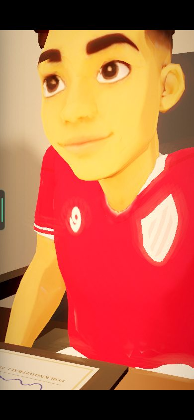
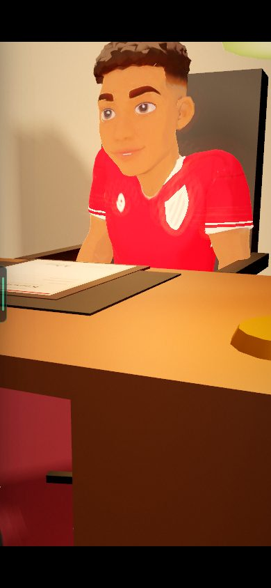
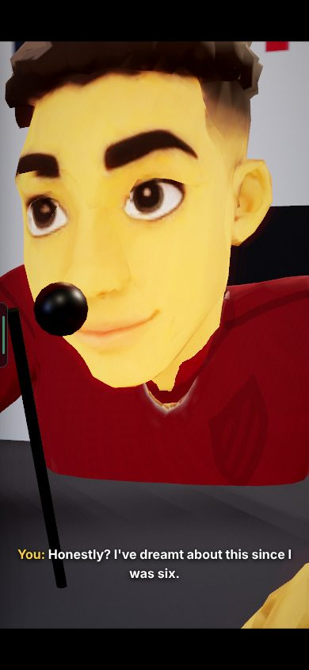
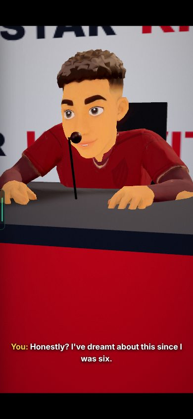
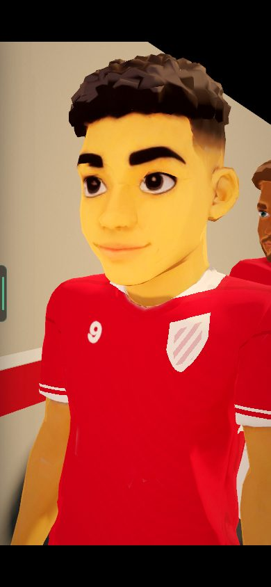
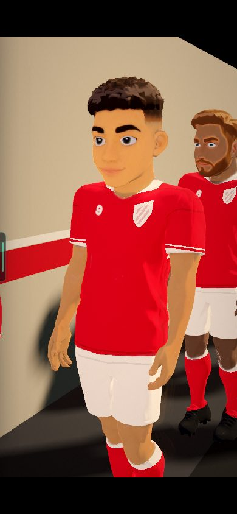
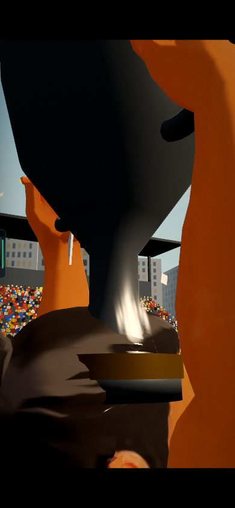
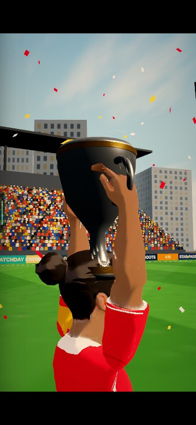
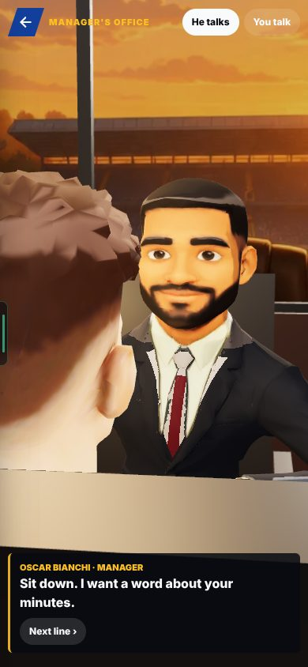
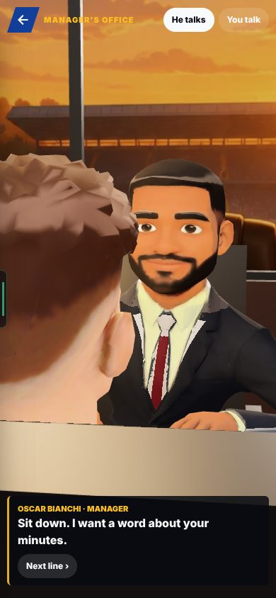
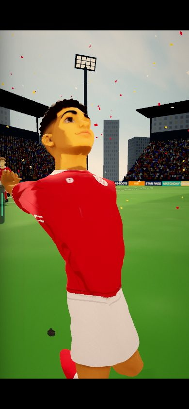
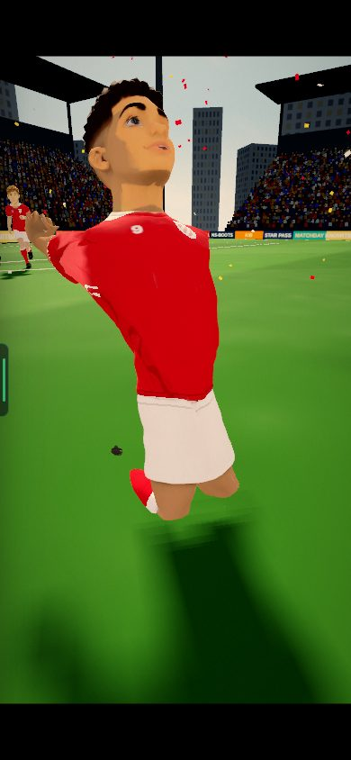
The 19 Oct audit: 14 of 23 shots were too tight on a phone, framed for a wide screen. A 6-second clip showed the mentor’s face filling the whole screen 0.4 seconds into a shot.
The cameras were framed for a wide screen. A still camera was not checked after the start of its shot, so a head could walk into the lens. (Reasoned from the report: it now checks every moment.)
Each person shot has a minimum width on a tall screen, with the head in the top part. Prop inserts show the whole prop. A still camera is checked at every moment of its shot. If a head comes within 1.3 m of the lens, the camera swings round to clear it.
The numbers count shots that failed the phone-size framing check. The report gives the counts, not the rules.
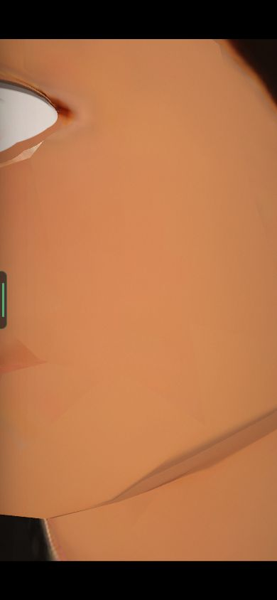
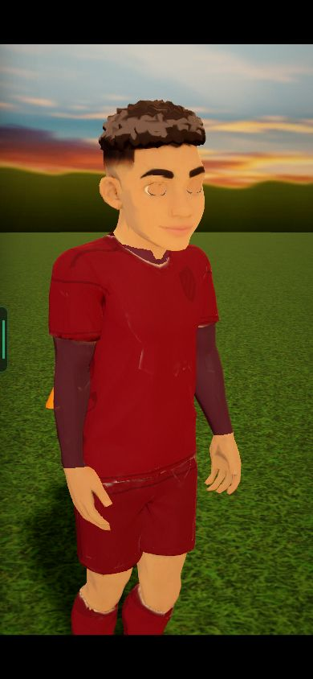
Look for: the man in black (the mentor) talking to the player, and the camera staying clear of his head. No cheek or face fills the screen. The clip is 6 seconds long.
The 19 Oct audit: faces never move. One made-up injury scene had a smiling face.
The heads had no face animation. (From the audit; the B5 report gives no deeper cause.)
Every drawn (Style A) head, in cut scenes and on Home, now blinks, glances, moves its irises and shows an expression from the feeling of each beat. The lips move, with teeth, when someone speaks. No photo faces.
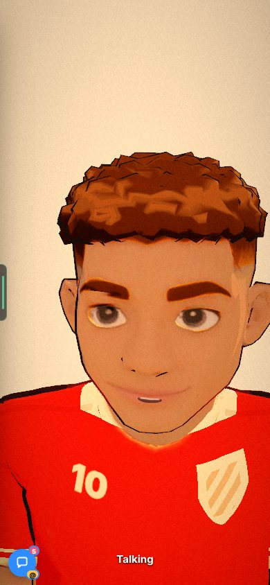
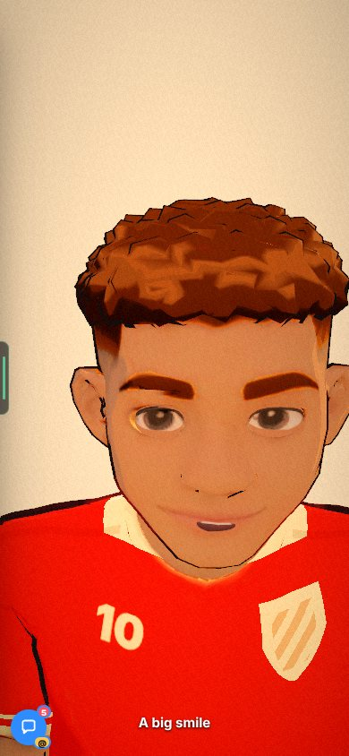
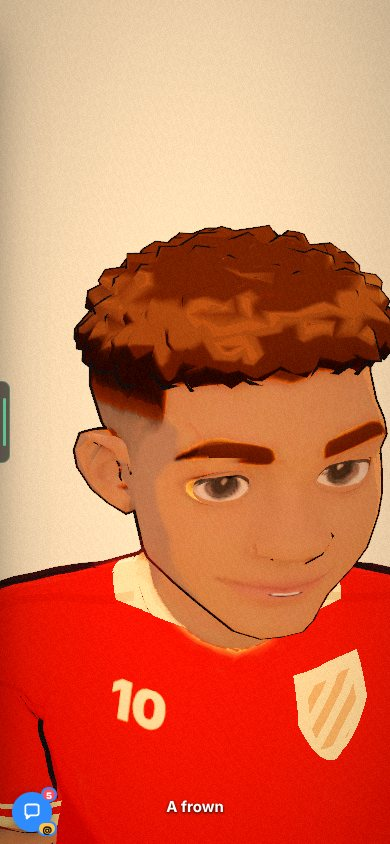
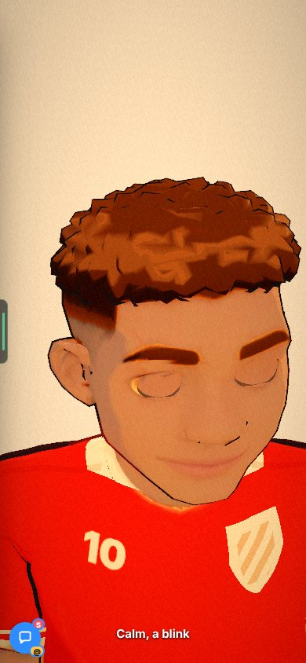
The 19 Oct audit: the home player stands stiffly, with no shadow. You asked for natural, energetic poses, eyes that blink and look around, and lips that move when he talks.
Not in the report.
A 33-second loop built from clips we already have: idle, keepy-uppies with his own ball, idle, a few words, idle, a quad stretch. Feet apart, weight shifting. The camera sits a quarter-turn round. A soft shadow, a side sun and a rim light.
Look for: him juggling the ball with his knee and his feet, and his weight shifting. The clip is 6 seconds long. The whole loop is 33 seconds.
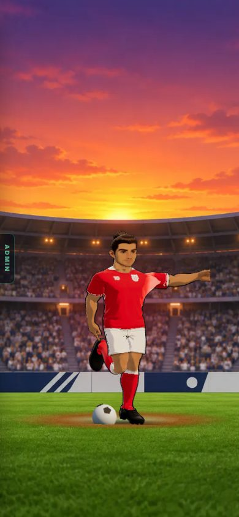
Phase 1 of the 3D plan you liked on 19 Oct: a bench page with the same ten shots.
A new test page, /star-3d-bench-dev. It shows the same 10 shots at phone size (Home, signing, office, press, trophy lift, walk-out, garden, a Free Roam drill and 2 made-up scenes), with a frame number on each and a Now / Before (19 Oct) switch. It also has a skin probe. Sub-pages: /home, /face and /faces.
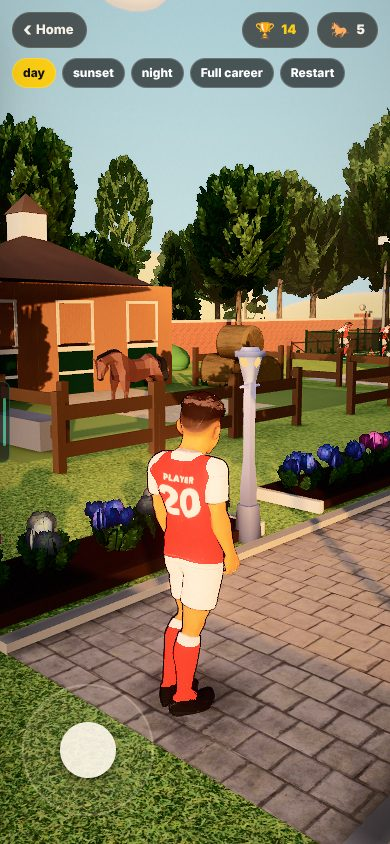
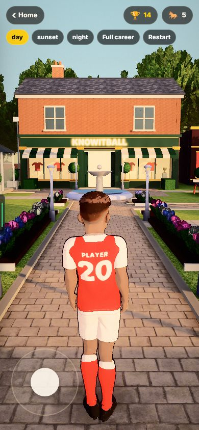
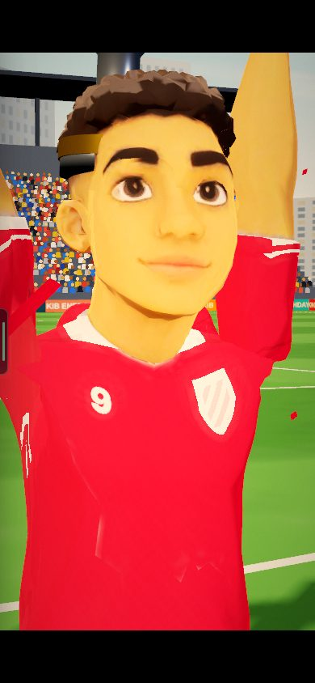
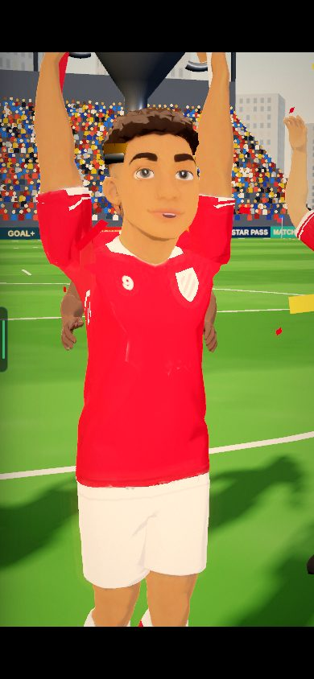
In the walk-out wide shot, away players pass about 1 m from the lens. It is the same as before B5.
The camera clearing only covers a head within 1.3 m of a still camera. This wide shot is not fixed by it. (Reasoned from the report’s words.)
Not changed. The report says: Harry to judge on his phone.
The Low quality tier, phone frame rates, the shop and casino skin, and any screen other than 390×844 were not looked at.
Not in the report.
Reasoned, not seen.
Phases 1 to 5 are built. Phases 6 to 10 (hands and props, a stadium and real rooms, training rebuilt, one flow through the career, sharper 2D moves) are not started.
Skin colour (median hue). Real player skin sits at 23 to 31 degrees. Signing 42.7 → 27.1. Press 45.2 → 28.1. Walk-out 38.2 → 27.1. Made-up trophy 40.0 → 28.4. Office 32.6 → 25.0. Home 27.2 → 26.4. Trophy lift 20.5 → 24.2, and its colour strength 0.99 → 0.68.
“Yellow” means skin whose colour is past 36 degrees. Real player skin tones sit at 23 to 31 degrees. Grey is before (19 Oct). Colour is after.
Bad shots at phone size. The audit’s 23 moments 11 → 0. Every camera shot, mid-shot, 27 of 65 → 0. Three moments per shot 82 of 195 → 0.
The numbers count shots that failed the phone-size framing check. The report gives the counts, not the rules.
Switches on the test pages. ?skinfix=0, ?framing=old and ?face=old bring back the old looks on the test pages. They are not game settings.
The mentor talking (under the phone cameras) and the Home player (under “The Home player is alive”). Both are 6 seconds, on a phone-size screen, with no sound.